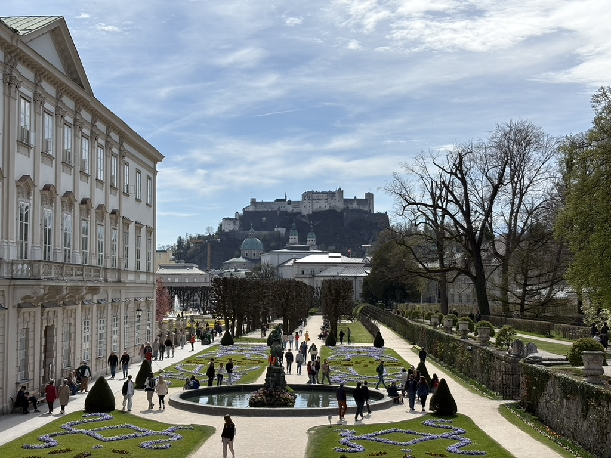
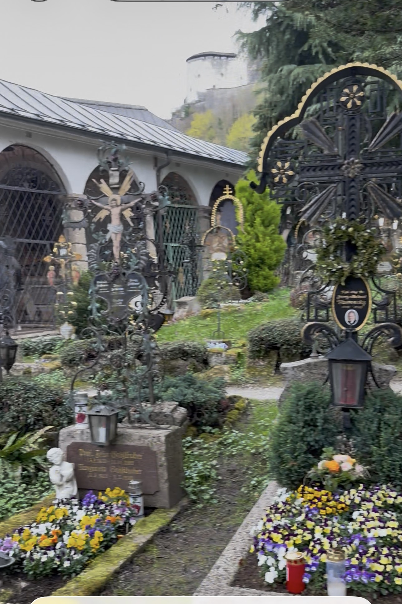
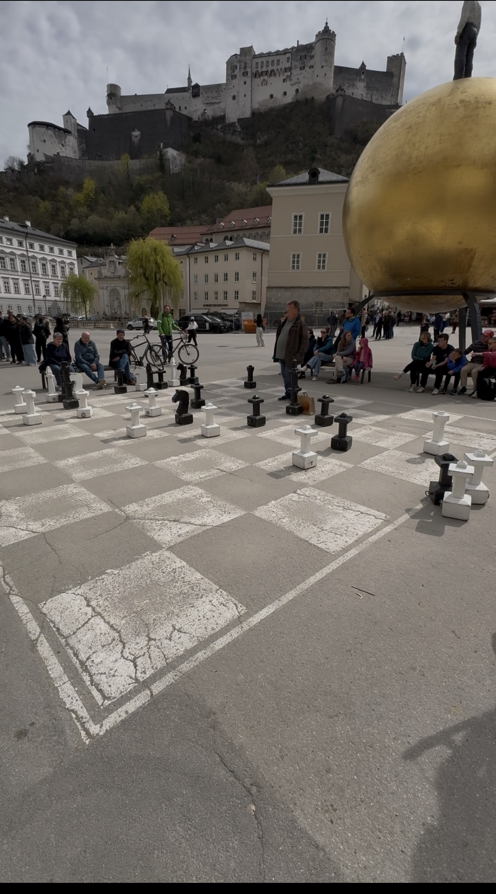
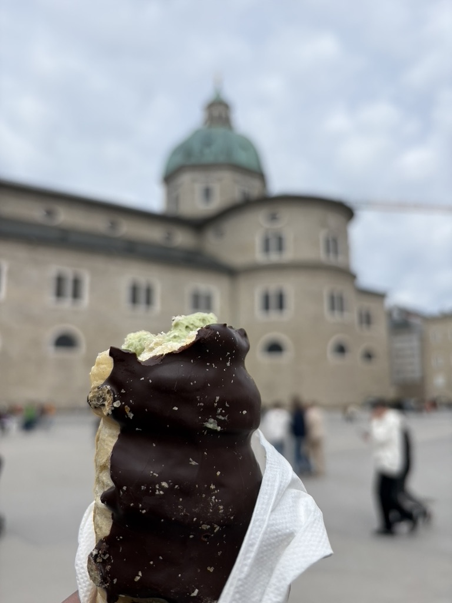
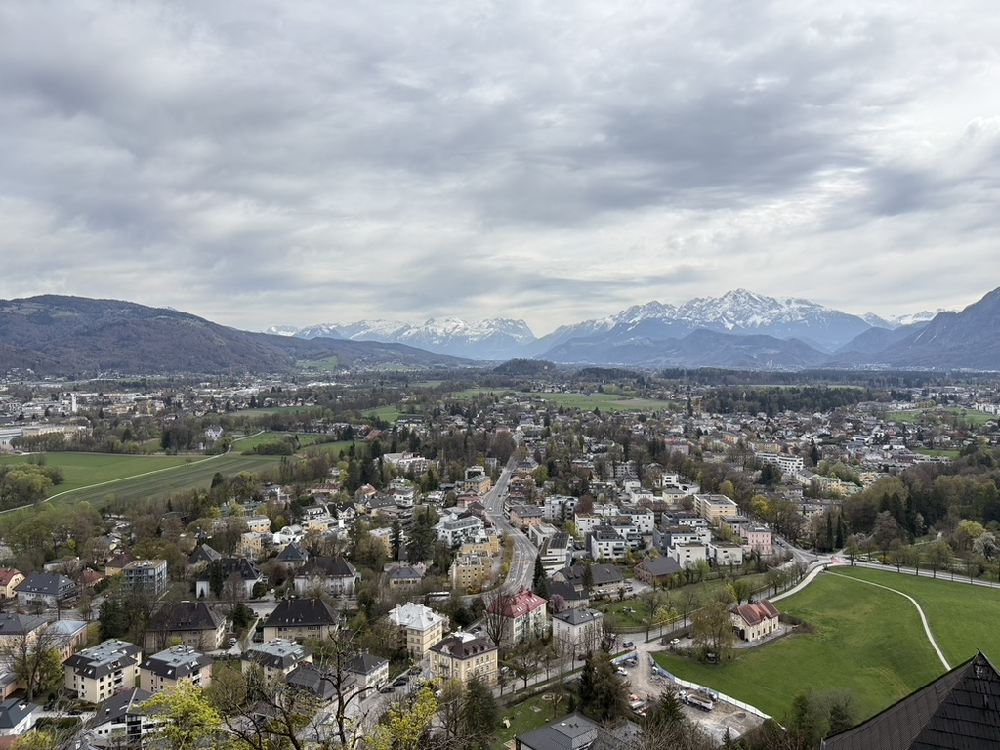

The RE Train, Eastbound
The regional express from Munich to Salzburg takes about ninety minutes, and for the last thirty of them the Alps are simply there — filling the window, unhurried and enormous. I had seen mountains before. I had not seen the Alps in early spring morning light: a kind of white that isn't white, more silver, more impossible. The train ran along the valley floor and the peaks sat above the cloud line and I stopped reading whatever I was reading and just watched.
I had one day. Salzburg operates entirely on the logic of a place that knows it is extraordinary and has arranged itself accordingly. The old town fits inside an afternoon if you walk quickly. I did not walk quickly.
The train pulled into Salzburg Hauptbahnhof and the carriage stirred. A young father was at the door with a trolley — toddler still in it — trying to navigate the gap between the train and the platform. It was wider than it looked; the drop, enough to give pause. I stepped off first, crouched, and held the base of the trolley from below while he guided it down from above. We lowered it together — slowly, steadily — until all four wheels found the platform. The child, for the record, looked entirely unbothered. He said something I didn't understand — German, perhaps, or something else entirely; possibly thank you. I nodded, and we went our separate ways into the city.
Mirabell Gardens: The Do-Re-Mi Steps
Mirabell Palace sits on the right bank of the Salzach and its gardens are, in early April, just waking up — fresh hedges and stone fountains and wide gravel paths that the locals use for morning runs with the fortress visible on the hill above. The Pegasus fountain is there, the same one Julie Andrews danced around in The Sound of Music. So are the steps where she led the von Trapp children through Do-Re-Mi.

Mozart's Birthplace
Getreidegasse is the old town's main shopping street, narrow and medieval, its wrought iron guild signs hanging above every door. Number 9 is where Mozart was born in 1756 and lived until he was seventeen. The building is now a museum. I paid the entry fee and climbed the narrow stairs to the apartment his family shared.
The rooms are small. You forget, looking at the scale of the music, that the man who wrote it lived in ordinary human rooms. His childhood violin is in a glass case — a small instrument, sized for a child's hands. He was playing it publicly at four years old and composing at five. The violin is about the length of my forearm. I stood in front of it for a long time and thought about what it means to be five years old with a gift that size.
The Stiftsbäckerei & St Peter's Cemetery
Behind the Franciscan Church, down a narrow alley called Fellingergasse, is the Stiftsbäckerei St Peter — a bakery that has been operating since 1160. It is believed to be one of the oldest bakeries in the world still functioning.
Next door is St Peter's Cemetery — the one in The Sound of Music, where the von Trapps hid from the Nazis. In reality it is a remarkable place regardless of its film history: small, walled, with individual graves each tended as its own garden. Iron lanterns hang over each plot. In the afternoon light they cast long shadows on the stone paths. The whole place smells of candle wax and old flowers and I walked through it very slowly, reading names, doing the arithmetic of how long people lived.

Currywurst & Schaumrollen
Lunch was a currywurst from a stall at Linke Altstadt — Berlin's great contribution to German street food, available apparently everywhere — followed by a Schaumrollen from a pastry shop nearby. A Schaumrollen is a cylinder of flaky pastry filled with meringue cream, dusted with icing sugar, and should probably be declared a controlled substance. I ate one standing watching two strangers competing over Freiluftschach (open air chess): yes, this is why people travel.

Hohensalzburg: The Fortress Above the City
Hohensalzburg Fortress has stood on its hill above the city since 1077. The funicular takes you up in about a minute; the walk takes twenty. I walked up.
From the fortress walls the view is 360 degrees: the old town to the north, the Alps to the south, the plain to the west where the light was already beginning to change. The fortress itself is massive and well-preserved — state rooms, a medieval organ, a torture chamber that the guide described with the cheerful detachment of someone who has explained medieval legal procedure many times. I walked every rampart and stood at every viewpoint. The air was cool and clear — that particular early spring freshness you only get at altitude. I didn't want to go down.
Mozartkugeln
Before leaving the old town I bought Mozartkugeln — the chocolate-and-marzipan balls that Salzburg has been selling to tourists since Paul Fürst invented them in 1890. The original Fürst Mozartkugeln are wrapped in silver-blue foil and sold only at the Fürst confectionery shops; the mass-produced Reber version is wrapped in red-gold foil and available at every tourist shop and airport in the German-speaking world. I bought the original. The difference is real and worth noting.
How I Accidentally Broke a Law in Germany
At Salzburg Hauptbahnhof, I boarded a train I was entirely certain was mine. It was not. I had asked a fellow passenger to confirm the departure — more out of habit than doubt — and she informed me, with the patient economy of someone who has redirected tourists before, that my train was a different service entirely. I got off. I waited. I boarded the correct train.
What I had not done — what I did not know I was required to do — was sign the ticket. In Germany, certain rail tickets must bear the passenger's signature before travel; it is not advisory, not a formality, not the kind of thing that gets waved through. It is, quietly and firmly, the law.
The conductor appeared. I produced my ticket. She looked at it once, looked at me, and said something in German. I said I did not speak German. She said, in English, that my ticket was unsigned. I had no response to this that would improve my situation, so I said nothing.
She produced a pen and held it out.
I took it, signed where indicated, returned it. She examined the signature, nodded once with the expression of someone who has resolved stranger situations than this before breakfast, and moved on down the carriage. No penalty. No form. Just the pen, the signature, and the quiet understanding that I had learned something.
I broke a law in Germany without knowing it existed. The resolution: a borrowed pen and ten seconds of mild humiliation.
Alpenglühen
There is a word in German — Alpenglühen — for the phenomenon where the Alps turn pink and then deep rose at sunset, the snow holding the last light long after the valleys have gone dark. I watched it from the train window on the way back to Munich, the peaks catching fire one by one above the darkening plain, and I thought about the conductor, the pen, the two women, the Californian at Neuschwanstein.
Nobody tells you that solo travel in a non-English speaking country will test every nerve you have — the wrong trams, the unreadable tickets, the announcements you can't understand. What they also don't tell you is that a stranger will always appear exactly when you need one. Sometimes with directions. Sometimes with advice. And once, memorably, with a pen.
The Alps went dark. Munich appeared on the plain ahead. I still had half a bag of Mozartkugeln. It had been, by any measure, a very good day.
 📍 Mirabell Palace, Salzburg
📍 Mirabell Palace, Salzburg 📍 Mozart's Birthplace, Getreidegasse
📍 Mozart's Birthplace, Getreidegasse
📍 Salzburg Old Town 📍 Linke Altstadt, Salzburg
📍 Linke Altstadt, Salzburg
📍 Festungsbahn, Hohensalzburg 📍 Linke Altstadt, Salzburg
📍 Linke Altstadt, SalzburgEXPEDITION 003 — SALZBURG
Did this story move you?